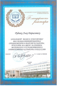
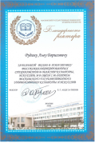

Лев Борисович Рудин
Учебное звание
Доцент по специальности «Болезни уха, горла и носа»
Учёная степень
Доктор медицинских наук
специализация
ЛОР, Фониатр
ДОЛЖНОСТИ:
Генеральный директор и врач-оториноларинголог ООО «Клиника Льва Рудина»
Президент Общероссийской общественной организации «Российская общественная академия голоса»
Профессор кафедры сольного пения и хорового дирижирования ФГБОУ ВО «Краснодарский государственный институт культуры»
НАГРАДЫ И ПОЧЁТНЫЕ ЗВАНИЯ:
Почётная грамота Министерство науки и высшего образования РФ (2021 г.)
Медаль ордена "За заслуги перед Отечеством" I степени (2019 г.)
«Ветеран труда» (2018 г.)
Медаль ордена «За заслуги перед Отечеством» II степени (2012 г.)
Почётная грамота Министерства культуры РФ (2011 г.)
СФЕРА НАУЧНО-ПРАКТИЧЕСКИХ ИНТЕРЕСОВ:
Являясь крупным специалистом в области фониатрии, Лев Борисович особое внимание в своей научно-практической деятельности уделяет междисциплинарному подходу к фониатрии, вокальной и речевой педагогике. Более 13 лет он изучает проблемы гигиены голоса, что позволило разработать и внедрить этиопатогенетическую систему профилактики дисфоний у вокалистов, в которой учитываются не только клинико-гигиенические, но и вокально-методические аспекты, способствующие росту заболеваемости голосового аппарата. Благодаря комплексному подходу в вопросах изучения голоса, Л. Б. Рудин обосновал и развивает науку о голосе – фониологию.
СТАЖ РАБОТЫ:
Общий 28 лет
Стаж в отрасли 21 лет
ОБРАЗОВАНИЕ:
– защитил докторскую диссертацию «Этиопатогенетическая система профилактики дисфоний у лиц голосо-речевых профессий (на примере вокалистов)»
– защитил кандидатскую диссертацию «Значение семейного анамнеза для профориентации, профотбора и профпрогноза в фониатрической практике»
– окончил очную аспирантуру на кафедре оториноларингологии Российской медицинской академии последипломного образования по специальности «Болезни уха, горла и носа»
– окончил клиническую ординатуру по оториноларингологии.
– с отличием окончил Ставропольскую Государственную медицинскую академию
– с отличием окончил вокальное отделение Ставропольского училища искусств
– с отличием окончил Ставропольское базовое медицинское училище
 

НАГРАДЫ:
За высокие профессиональные качества в 2007 г. Л.Б. Рудин награждён орденом «Профессионал России» Российской геральдической палаты. За большой вклад в отечественную культуру в 2011 г. награждён Почётной грамотой Министерства культуры РФ. За высокие достижения в труде в 2012 г. Указом президента РФ награждён медалью ордена «За заслуги перед Отечеством» II степени. Имеет большое количество благодарностей от различных учреждений и организаций.
НАГРАЖДЕНИЯ:
Москва, Большой театр России, 22.02.2013 г.
Министр культуры Российской Федерации Владимир Ростиславович Мединский вручает медаль ордена «За заслуги перед Отечеством» II степени президенту Российской общественной академии голоса Льву Борисовичу Рудину.
Москва. Мэрия Москвы. 25.12.2019 г.
Вручение Мэром Москвы Сергеем Собяниным медали ордена «За заслуги перед Отечеством» I степени президенту Российской общественной академии голоса Льву Борисовичу Рудину.